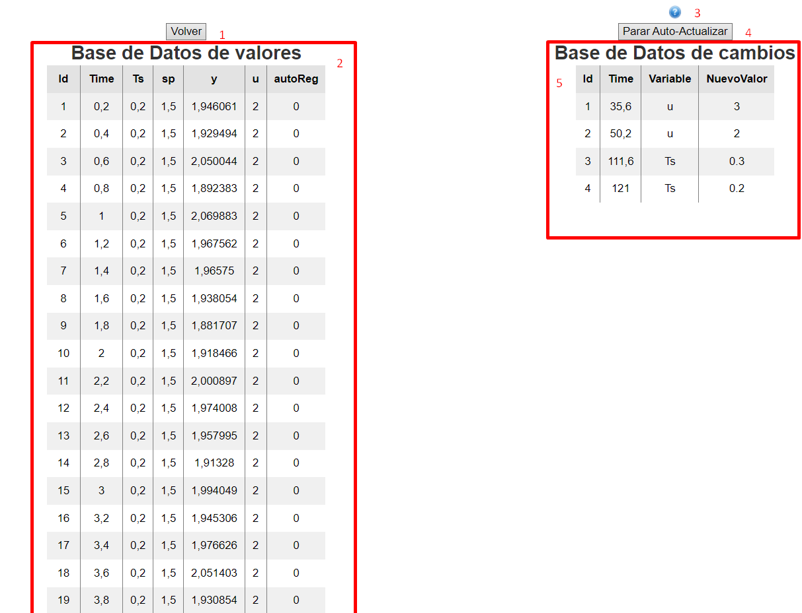

Ayuda de la página de la base de datos

- Botón para volver a la página principal.
- Tabla con todos los datos de todas las variables recibidas por el puerto en serie hasta el momento.
- Botón para mostrar este menú de ayuda.
- Botón para parar / reanudar la actualización automática de los datos en la página.
- Tabla con todos los cambios enviados desde la aplicación web.
Inicio